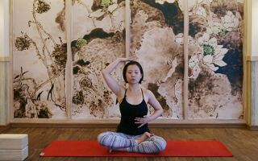
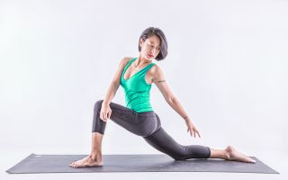
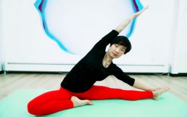

首 页
>
视频
分类：
教程
访谈
活动
趣味
装备解密
级别：
全部
入门
初级
精进
网络：
全部
全网教程
自制
体位：
全部
站姿
蹲姿
跪姿
坐姿
仰卧
俯卧
倒转
流派：
全部
哈他瑜伽
希瓦南达
阿斯汤加
火箭瑜伽
飞行瑜伽
环宇瑜伽
艾扬格瑜伽
流瑜伽
三瑜伽
阴瑜伽
需求：
全部
办公室瑜伽
瘦身瑜伽
理疗瑜伽
拜日式
普拉提瑜伽
高温瑜伽
空中瑜伽
球瑜伽
孕妇瑜伽
舞韵瑜伽
音钵瑜伽
亲子瑜伽
瑜伽唱诵
合集：
全部
专辑

姜太刚老师辅助工具瑜伽教程：肩颈的进阶练习
播放：57072次
姜太刚老师辅助工具瑜伽教程：肩颈的进阶练习
播放：57072次

姜太刚老师辅助工具瑜伽教程：肩颈的进阶练习
播放：57072次

姜太刚老师辅助工具瑜伽教程：肩颈的进阶练习
播放：57072次
姜太刚老师辅助工具瑜伽教程：肩颈的进阶练习
播放：57072次
姜太刚老师辅助工具瑜伽教程：肩颈的进阶练习
播放：57072次
姜太刚老师辅助工具瑜伽教程：肩颈的进阶练习
播放：57072次
姜太刚老师辅助工具瑜伽教程：肩颈的进阶练习
播放：57072次